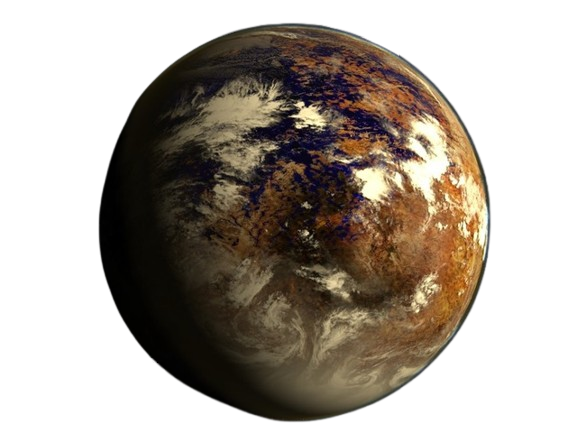
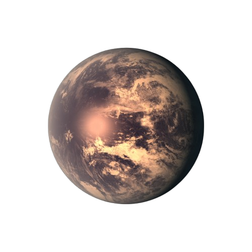
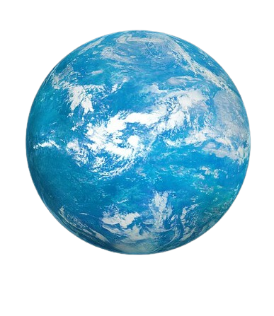

.png)
.png)
Это один из самых популярных и эффективных методов для обнаружения экзопланет. Его используют такие телескопы, как Kepler и TESS. Как это работает: Когда экзопланета проходит перед своей звездой (то есть совершает транзит), она частично блокирует свет звезды. Астрономы могут наблюдать небольшое уменьшение яркости звезды на короткий период времени. Если такие падения яркости повторяются регулярно, это может указывать на наличие планеты.
Также известен как метод Доплера. Он был использован для открытия одной из первых экзопланет — 51 Пегаса b. Как это работает: Звезда и планета не просто движутся друг вокруг друга: планета тянет за собой звезду, вызывая её небольшие движения (колебания) вперед и назад. Когда звезда движется по направлению к Земле, её свет смещается в синюю область спектра, а когда удаляется — в красную. Это смещение можно измерить с помощью спектрографов.
Этот метод основан на эффекте гравитационного линзирования, предсказанного Эйнштейном. Как это работает: Когда одна звезда проходит перед другой, гравитация ближайшей звезды действует как линза, усиливая свет более далекой звезды. Если у ближайшей звезды есть планета, она создаст дополнительные отклонения в усиленном свете. Наблюдение за этими отклонениями позволяет обнаружить планету.
Это метод измерения небольших изменений в положении звезды на небесной сфере. Как это работает: Когда планета вращается вокруг звезды, она заставляет звезду немного смещаться в пространстве. Астрономы измеряют это смещение с высокой точностью. Если смещение повторяется регулярно, это может указывать на наличие планеты.
Этот метод подразумевает получение реальных изображений экзопланет с помощью специальных телескопов. Как это работает: Планеты намного тусклее своих звезд, что делает их обнаружение очень сложным. Однако с помощью специальных масок, блокирующих свет звезды, астрономы могут увидеть слабый свет, исходящий от планеты.